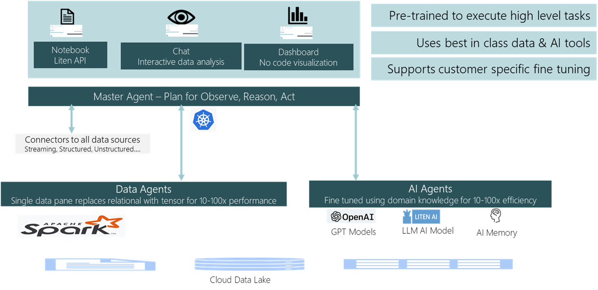

Liten, a Silicon Valley startup, champions a cutting-edge multi-agent platform designed to observe, reason, and act upon data. Its founders possess extensive expertise in AI and data applications and have a proven track record of accelerating platform development for superior performance. They bring valuable experience in optimizing Apache SparkTM performance for large-scale distributed analytics.
Modern enterprises are experiencing an unprecedented surge in data creation, where vast amounts of information are generated constantly. This expansion coincides with significant advances in cloud technology, marked by disaggregated systems. While there are significant and continuous hardware advancements, the organizations struggle to meet the ever increasing demands for performance improvements, reduction in cycle times and to save on computational and cloud costs. The organizations are also in a race to combat climate change and meet their sustainability targets.
Multi Agent Platform with AI and Data Agents
Liten's multi-agent platform orchestrates intricate data and AI tasks, automating various engineering processes to enhance productivity and customer satisfaction. Leveraging both best-in-class third-party and proprietary foundational models, its AI agents are fine-tuned according to customer input, ensuring optimal performance. Liten data agents can handle petabytes of big data and are integrated into the platform.
Employing a unique tensor representation, the data agents within Liten AI can accelerate the queries by a huge multiplication factor of 50-100x thus helping the organizations achieve the twin goals of performance with sustainable computing while also saving costs in a competitive environment.
User Interfaces
Liten offers different types of interfaces to chat with data to observe, reason and visualize. They are available on request today. Click here to email a request.
Use Cases
Here are a few use cases where Liten is able to help customers solve big data reasoning.
Querying for policy violations from petabyte of data
The customer hosts extensive network traffic data in the cloud, reaching potentially petabyte-scale volumes. As per their operational needs, they regularly query these files for potential policy breaches. However, this process faced significant slowdowns, hindering their ability to meet service level requirements.
Cloud Data Lake
Liten offers a comprehensive big data solution capable of storing limitless log data. Utilizing industry-standard open data lake formats, we organized the data into partitions based on traffic timestamps.
Accelerated Queries
Liten tackled this challenge by introducing an acceleration layer that stores data in a tensor-formatted file. This strategic approach minimizes the necessity for cross-referencing and joining data across multiple dimensions.
Co-pilot to turbocharge productivity
At one of our client sites, training new engineers necessitated the presence of experienced ones. Liten optimized this process by leveraging existing playbooks and cloud server datasets to refine the models. Additionally, it incorporated customer-specific prompt engineering to elicit expert, human-like responses from the Liten platform.
A newly onboarded engineer could inquire about debugging status code errors, various log files, or inquire about the most significant issues from the past month and receive expert, human-like responses.
Natural language-based reasoning
Customers often feel hesitant about learning a new query language. The Liten platform addresses this concern by offering a natural language interface for query specification. Its code AI agent translates these specifications into SQL queries, enabling customers to use them seamlessly. Moreover, the platform integrates sophisticated visualization tools, empowering users to create and visualize cloud-based dashboards effortlessly. All these functionalities are orchestrated through a master agent, accessible via a unified natural language interface.
Liten's models serve as invaluable aids to all cloud engineers—CIOs, SREs, DevOps engineers, and more—acting as co-pilots to significantly enhance productivity.
Streamline Event publishing
In one of our customers, many alerts are being issued for the same event. Liten can streamline the flow. For this, it stores the alerts. Using its models, it can detect similar events and produce consolidated messages in Slack bots. The flow looks like this
Sample user reasoning sessions
Liten possesses the capability to comprehend diverse log file formats. Its adaptable data model allows for seamless extensions, facilitating the comprehension of customer-specific data. The finely-tuned models within Liten are adept at understanding domain-specific knowledge. Moreover, Liten can fine-tune models using customer data exclusively for their specific use cases.
Displayed below are a few chat sessions that serve to demonstrate the functionality and workings of Liten.
Server log reasoning
Liten models are finely tuned to execute server log reasoning with an expertise akin to an expert. Here are several examples showcasing the range of analysis it can perform.
Internal server error analysis
Users have the ability to upload their data for analysis through Liten's platform. Additionally, Liten manages SQL tables and ingests data into these tables. This enables customers to execute queries, create visualizations, and deduce insights from the data. Moreover, Liten conducts advanced analysis and coordinates both data and AI agents to fulfill various tasks for the users.

Liten is capable of analyzing data and offering error analysis as part of its functionalities.

Customers performed various tasks using chat interfaces like -
Linux Log Expert Analysis
The Linux operating system generates diverse log files including system logs, application logs, and event logs. Liten comprehends these log files and has the capability to analyze failures, offering potential solutions accompanied by code.
Analysis of syslog error
Interpreting Linux system logs can be challenging. Liten stores these logs and conducts comprehensive analyses to derive valuable insights. Refer to the following chat for an example of the analysis.

Users have the ability to inquire about different aspects of Linux log data, such as
Summary
Liten streamlines the analysis of extensive datasets through innovative AI and accelerated data agents, simplifying complex reasoning tasks. It unlocks pioneering solutions by harnessing next-generation tools. To experience its capabilities firsthand, it's available for trial now. Contact us for further information.